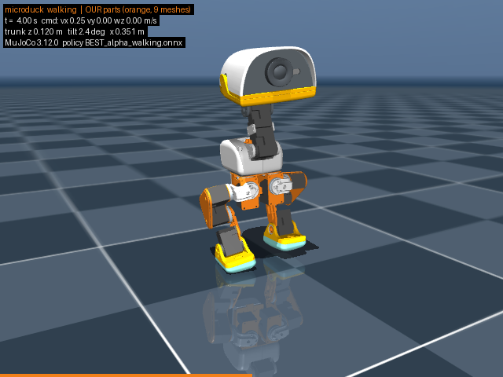
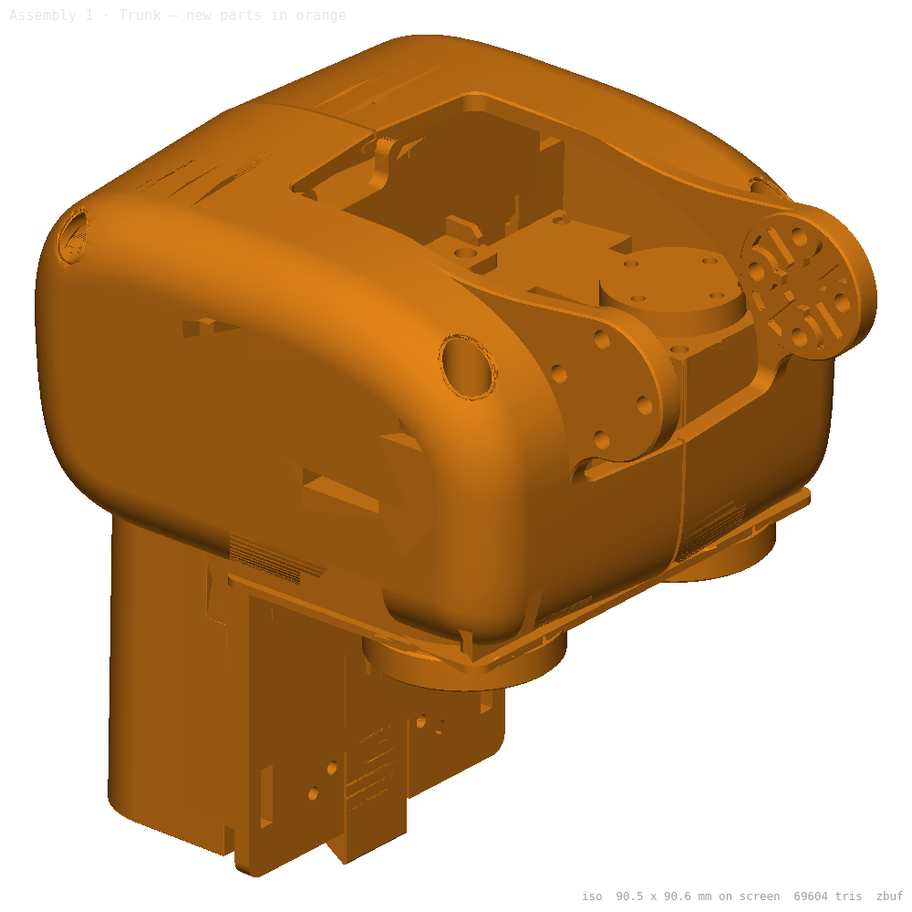

Microduck
A bipedal desktop robot reconstructed from Pollen Robotics' open firmware and published simulation model. Mechanics rebuilt parametrically; electronics and assembly derived from the published source.
| Document | MD-REL-001 |
| Revision | A · 2026-09-02 |
| Units | mm · g · ° |
| Status | PROTOTYPE |
Readiness — the honest answer
Not completely factory-ready. Every mechanical part can be printed and every off-the-shelf part can be bought today, and the assembled robot runs Pollen's own trained policies in simulation — so a working prototype is buildable now. Three things block a factory release, all named in §1: the three custom circuit boards have no published design files (we have a footprint-accurate stand-in, not fabricable Gerbers), the mechanical drawing generator has two measured defects still being fixed, and while the sim meshes are now visually reconciled against the product photographs, a physical metrology (laser-scan) check has not been done. This dossier states what is done, what is not, and gives the complete build sequence for the prototype.
1Manufacturing readiness
Each lane graded against what a factory needs, not against what looks finished. Evidence links to the real file in the repository.
| Lane | State | What exists | What blocks factory |
|---|---|---|---|
| Mechanical geometry | Ready | 20 parts rebuilt parametrically, each graded ≤1 mm p95 vs Pollen's mesh; the rest mesh-backed. Assembly builds in the kernel (70 placements). | Vendor-mesh parts are not dimensioned (loaders, not parametric). |
| Drawings | Partial | 10 verified sheets (INDEX). Third-angle, hole tables, sections. | Generator merges coaxial holes into a phantom counterbore; wall note reports a section scan, not the true 0.80 mm minimum. Fix in progress. |
| Printing | Ready | All 30 printed parts sliced with real numbers: 218 g PLA / 9.9 h + 26 g TPU / 2.4 h; two plate files (PRINT.md). The executable build document is MANUFACTURING-PLAYBOOK: process selection with a break-even quantity per part, a DFM finding for all 30 printed parts measured off the STL that will actually be printed, the print profiles the slicer used, the assembly line with six printed jigs, the QA gates and the battery packaging duties. | Shell process (print vs mould) is a volume decision, not a blocker — PLAYBOOK §2 computes it: 18 of the 30 slugs have no break-even against the cheapest sourced moulded piece at all. Supports were OFF in the stock preset that produced the sliced grams and seconds, so those figures are a FLOOR (PLAYBOOK §4). |
| Electronics — off-the-shelf | Ready | 11 ICs datasheeted with provenance; full datasheet, schematic, layout. | — |
| Electronics — custom PCBs | Not ready | Robot HAT, imu_to_dxl and battery-contact PCB: footprint-accurate stand-ins; the HAT's connectors/regulators are reconstructed. | No published schematic/Gerbers. A real board design + fab is required. |
| Assembly definition | Ready | Full step-by-step sequence (§4), servo IDs, bearing seats, fastener counts, wiring — from the measured joints. | Fastener counts are community-derived (flagged); torque unspecified by Pollen. |
| BOM & sourcing | Partial | 32 bought lines, each with the distributor page its price was read from and the fetch date (SOURCING, generated from spec/sourcing.json); 37 distinct distributors gave a price, counted as registered domains and entered in the data under 42 vendor name strings, because the same shop is named differently where the packaging differs. A further 2 domain(s) were read and gave no price for our part (jlcpcb.com, pcbway.com) and are counted nowhere. 19 of 32 lines rest on two or more distinct shops that each gave a price; 3 are graded FAIL and 10 CANNOT DETERMINE. 13 ready-to-send requests for quotation (RFQ) — none of which has been sent. out/release/bom.csv is generated from the same data by tools/gen_sourcing.py, so the two cannot disagree again. This cell is generated: the script rewrites it between markers in this file. | The subtotal of lines graded PASS is $546.4155 per robot at 1 and $530.4328 at 1 000. A further $81.0808 at one robot (12.92 % of the readable total) is readable but comes from 6 lines this document grades FAIL or CANNOT DETERMINE — P3 Banana battery-contact PCB - custom, bare… $33.0000 [CANNOT DETERMINE]; B3 Radxa ZERO 3W single-board computer $23.0000 [FAIL]; B12 Speaker, 35 x 25 x 7 mm, 8 ohm, 2 W (head) $9.7800 [CANNOT DETERMINE]; B7 M12 wide-angle lens (only if the camera board… $7.9900 [CANNOT DETERMINE]; P1 Robot HAT - custom PCB, bare board + assembly $5.0375 [FAIL]; P2 imu_to_dxl v2 - custom PCB, bare board +… $2.2733 [FAIL] — and is reported separately, never inside the headline. Both are a FLOOR: 5 lines carry no price at all (B13 Microphone(s), B15 Camera-in-use indicator LED, B16 Bluetooth gamepad (Xbox-style), B17 USB-C cable, B18b M2 socket head cap screws, other…) and are never summed as zero. 57 vendor pages refused a price and are listed for retry. |
| Test & validation | Ready | 44 gated tests (TEST-PLAN), generated from spec/test-plan.json: bring-up, servo identity and calibration, sensors, control loop, radios, identity and the pairing PIN, walk acceptance, and endurance, power and thermal soak. Every gate names its basis: vendor datasheet, Pollen source, our simulation, or a decision of the plan. firmware/upstream.json and software/upstream.json record what a unit under test is running and which of it is published. | Untried — no unit has been built, so no gate has been exercised. The walk gate is 75 % of a simulated distance and that fraction is a decision, not a measurement. |
| Structural (FEA, drop, buckling, fatigue) | Not ready | 32 single-part FEA studies on 14 parts under loads read off MuJoCo (walk peak 23.1162 N on one foot, 0.250 m drops onto the foot and onto the head): 17 PASS, 9 FAIL, 6 CANNOT DETERMINE (STRUCTURAL, generated by tools/gen_structural.py from out/sim-evidence/*.json, self-checked). Walking-cycle fatigue on every part: 5 of 14 parts with a walk solve pass the design endurance or the 10 km threshold, 5 FAIL, 4 CANNOT DETERMINE; the shortest design life is part:microduck-trunk-base at 3.296e-07 km (P_s >= 90 %). Buckling of the three slender members: neck-plate PASS; shin FAIL; upper-leg-rigidity-plate CANNOT DETERMINE. | FAIL list, worst first: motor-support head drop SF 0.175, motor-support foot drop SF 0.273, shin foot drop SF 0.420, hip-bracket foot drop SF 0.631, foot-left foot drop SF 1.086, neck-plate foot drop SF 1.254, motor-support walk SF 1.411, power-support foot drop SF 1.652, yaw2roll foot drop SF 1.766. Worst linear number on disk: trunk-base foot drop SF 0.062 (CANNOT DETERMINE). The drop height is the lane brief's input, not a requirement; the fitted filament and print orientation are not declared, so every SF rests on the class table and one representative datasheet each for PLA and TPU. |
| Simulation / validation | Ready | MuJoCo runs Pollen's walk / sit-stand policies on our meshes; stock-vs-ours trajectories bit-identical. | Visual photo-vs-CAD conformance now documented (reference match); a physical laser-scan metrology check is still not done. |
{kind=link}
{kind=link}
2Bill of materials
Per robot. Full sourced table with URLs, tier prices, MOQ, lead times and alternates: SOURCING.html (data: spec/sourcing.json); also out/release/bom.csv (generated from the same spec/sourcing.json by tools/gen_sourcing.py since 2026-09-03; it was hand-written and had drifted on four lines) and docs/production/components.html (generated from components.md by tools/md2html.py; the link was dead until 2026-09-03 — only the .md existed). A price nobody read is stated CANNOT DETERMINE, never guessed, and is never summed as zero.
| Item | Qty | Unit @1 | Per robot @1 | Per robot @1000 | Cheapest read page | Grade |
|---|---|---|---|---|---|---|
| Dynamixel XL330-M288-T smart servo | 15 | $23.9000 | $358.5000 | $358.5000 | ROBOTIS International | PASS |
| Ball bearing 22 x 16 x 4 mm (thin section) | 11 | $4.0000 | $44.0000 | $44.0000 | Jiang Xin Technology (Guangdong,… | PASS |
| Banana battery-contact PCB - custom, bare board + contacts | 1 | $33.0000 | $33.0000 | $33.0000 | AdvancedPCB / Advanced Circuits… | CANNOT DETERMINE |
| Robot Cable-X3P 180 mm, 10-pack (Dynamixel bus leads) | 2 | $15.5000 | $31.0000 | $31.0000 | ROBOTIS International | PASS |
| NP-F550-form-factor 2S Li-ion pack, 7.2 V, 2600 mAh (+… | 1 | $24.9500 | $24.9500 | $24.9500 | NextBatteries | PASS |
| Radxa ZERO 3W single-board computer | 1 | $23.0000 | $23.0000 | $23.0000 | ALLNET China | FAIL |
| Time-of-Flight 8x8 multizone ranger (module or bare die) | 1 | $22.7000 | $22.7000 | $19.4300 | DigiKey | PASS |
| IMX219 camera board, M12 mount, with lens | 1 | $15.9000 | $15.9000 | $12.5000 | Seeed Studio | PASS |
| Ball bearing 15 x 10 x 3 mm | 3 | $4.8600 | $14.5800 | $12.3930 | Bearings Direct (US) | PASS |
| Speaker, 35 x 25 x 7 mm, 8 ohm, 2 W (head) | 1 | $9.7800 | $9.7800 | $4.9800 | DigiKey | CANNOT DETERMINE |
| 12 further priced lines (B7, B18c, P1d, B14, P1, B19a, B8, P2c, P2, P1c, B19b, C2) | — | — | $50.0864 | $40.0363 | see SOURCING | — |
| M2 x 6 socket head cap screw, A2 stainless, DIN 912 | 80 | EUR 0.0486 | EUR 3.8880 | EUR 3.4720 | RST-Versand (DE) | PASS — not converted |
| Microphone(s) | 0 | CANNOT DET. | CANNOT DET. | CANNOT DET. | — | CANNOT DETERMINE |
| Camera-in-use indicator LED | 1 | CANNOT DET. | CANNOT DET. | CANNOT DET. | — | CANNOT DETERMINE |
| Bluetooth gamepad (Xbox-style) | 1 | CANNOT DET. | CANNOT DET. | CANNOT DET. | — | CANNOT DETERMINE |
| USB-C cable | 1 | CANNOT DET. | CANNOT DET. | CANNOT DET. | — | CANNOT DETERMINE |
| M2 socket head cap screws, other lengths (x4, x8, x12) + M2… | 185 | CANNOT DET. | CANNOT DET. | CANNOT DET. | — | CANNOT DETERMINE |
| Readable subtotal per robot (22 priced lines, USD only, nothing converted) | — | — | $627.4964 | $603.7893 | — | — |
| of which graded PASS | — | — | $546.4155 | $530.4328 | — | — |
Readable bought cost is $627.4964 per robot at one robot and $603.7893 at 1 000, of which $546.4155 / $530.4328 comes from lines graded PASS. Both are already above Pollen’s $399 retail before labour, and both are a FLOOR: 5 lines carry no price at all and are never summed as zero. The largest single line is the servos at $358.5000 per robot, 57.1318 % of the readable total at one robot and 65.6094 % of the PASS subtotal, so the volume question turns on one ROBOTIS OEM quote (§7). This paragraph and the table above it are generated by tools/gen_sourcing.py.
3Release files & previews
Every deliverable is a real file in this repository. Served live over the repo (tools/serve.sh), each link opens the actual document.
3.1 The robot as built

3.2 Mechanical drawings

3.3 Electronics

3.4 Print plates & simulation


3.5 Document index
- specSPEC.md — the measured specification (envelope, 15-joint table, every mesh)
- partsPARTS.md — every part, quantity, material, body, joint, rebuild status
- elecELECTRONICS-AND-SOFTWARE.md — bus, registers, daemons, pin map
- bomBOM.md · PRODUCTION.md — costs at 1/10/100/1000, print-vs-mould, compliance
- sourceSOURCING.html · RFQ.html — every bought line with its distributors, tier prices, MOQ, lead time and alternates. 19 of 32 lines carry two or more distinct distributors that each gave a price; the other 13 do not, and each states why and what would settle it. Plus the 13 requests for quotation that close what is still unpriced (nothing sent).
- manualMANUAL.md — the construction manual (source of §4)
- wiringCABLES.md — 22 cables, lengths, voltage-drop
- simSIM-CAPABILITY.md — what the simulation can and cannot do
- structSTRUCTURAL.html — FEA on every load-bearing part under MuJoCo-measured loads, the 0.250 m drops, buckling and fatigue; every study on disk published, worst number stated regardless of grade
- compareCOMPARISON.html — our CAD beside the official product photos at matched angles, with joint close-ups
- shelfSHELF-STATUS.html — what the triad shelf says about itself:
bin/triad check --allover all 64 part, connection and assembly folders, each with the sentence the folder wrote about its own coverage, grouped by defect class, each naming what would settle it. The counts move while other lanes work, so they live on the page and not in this sentence. Generated bytools/gen_shelf_status.pyfrom a live checker run (data: out/laneT/shelf-status.json).python3 tools/gen_shelf_status.py --verifyre-runs the checker and compares a SHA-256 digest over every field this page renders — each ref, its verdict, and per reason row the row’s own verdict, its defect class, the file it was raised against, and the folder’s WHOLE sentence (why_full, not the checker’s 400-character cut) — recomputed from the committed JSON, not read out of it, so any of them moving in either direction makes it print STALE and exit 1. It compared only three totals and the set of ref names until 2026-09-03, and in that shape it certified a page whose FAIL set had no ref in common with the shelf’s; its first repair still hashed the checker’s cut string only, leaving 30 680 characters on 33 of 90 reason rows outside the digest. Both defects, and the deliberate breakages that prove the current detector goes red, are written into §5 of the page itself - toolsTOOLCHAIN.md — exact tool + kernel versions to reproduce every file
4Assembly — full sequence
Build order: trunk → hips → legs → neck → head → wiring → power-up. Every servo ID, bearing seat and joint is called out. Positions are world-frame (mm) unless a body frame is named. Derived from the measured joint tree (14 hinges).

1 · Trunk (orange = added) 2 · Hips 3 · Legs
3 · Legs
 4 · Neck
4 · Neck
 5 · Head
5 · Head
 Assembled
Assembled
sim/assembly_steps_mj.py. Camera angles and a photo-vs-CAD reference check: reference-match dossier.baud_rate=3) before fitting it — the bus is one daisy chain; a duplicate ID means disassembly.
Bearings: all press-fit into printed seats; press the outer race only.
Fasteners: M2 throughout; counts marked [community] are derived from hole-fitting on the sim meshes, not a Pollen BOM. FDM holes print 0.1–0.3 mm undersize — ream before assembly. Torque is unspecified: snug + a quarter-turn into plastic.STEP 1Trunk body trunk_base
- Press the two 22×16×4 hip-yaw idler bearings into
trunk_baseat body-frame (6, ±17.5, −5). - Set servo IDs 20 (left hip yaw) and 10 (right hip yaw). Bolt both XL330s hanging from
trunk_base, horns down (−z), horn axes through world (6, ±17.5, 115). Each XL330 uses its own 4 × Ø2.0 + 8 × Ø1.6 pattern. - Bolt
power_support(battery cradle) totrunk_base— 8 × Ø1.6 M2 tap [community]; M2×6 into inserts. - Clamp the banana contact PCB onto
power_support's Ø3.9 pins withbanana_pcb_locker— 2 × M2 through its Ø2.17 eyes. - Leave the NP-F550 out until Step 7.
STEP 2Hips yaw2roll / bearing_roll, hip_l ×2
- Set IDs 21 (left hip roll) / 11 (right).
- Press one 22×16×4 into
yaw2roll/bearing_rollat body (0, 16.5, 12.5) and one into each hip bracket at (21/25, 0, −18.5). - Fix
yaw2rollto the hip-yaw servo horn (spline joint); the 3 mmbearing_rollplate rides the idler bearing opposite the horn — 4 × M2 [community]. - Mount the hip-roll servo in
yaw2roll(8 × M2 + 6 c'bore [community]); roll axis +x at world (22.5, ±17.5, 102.5). - Fix
hip-bracketto the hip-roll horn — 9 × M2 + 6 c'bore [community]. Hip-pitch axis +y at world (4, ±42.5, 102.5). Mirror for the right side.
STEP 3Legs upper_leg, leg (shin), ankle ×2
- Set IDs 22 hip-pitch, 23 knee, 24 ankle (left); 12/13/14 (right).
- Fit hip-pitch + knee servos into the upper-leg housing (knee axis −y at (−31.8, ±38.5, 80.5)); press one 22×16×4 into the upper leg at body (22, 35.8, −4).
- Screw the 1 mm rigidity plate across the thigh — 4 × M2 [community].
- Hang the upper leg on the hip bracket: horn side to hip-pitch, idler side on the bracket bearing.
- Fit the ankle servo into the shin (the 8 mm stepped plate) — 6 × M2 + 6 c'bore [community]; join shin to the knee horn + idler bearing.
- Press the 15×10×3 bearing into the ankle bracket; fix the ankle to the ankle-servo horn (5 × M2 + 5 c'bore [community]).
- Screw the hard foot to the ankle (fixed, no joint); fit the TPU sole onto the foot, friction surface down.
STEP 4Neck neck, neck_pitch
- Set IDs 30 (neck pitch, bottom) and 31 (head pitch, top).
- The two 2 mm neck plates span the 50 mm neck with a servo at each end — 4 × M2 per plate [community]. Neck-pitch axis −y at world (26, 14.5, 152.4); head-pitch axis +y at (26, 14.5, 202.4).
- Bolt the ID-30 servo to the trunk (horn to the neck plates); bolt ID-31 at the top.
- Press one 22×16×4 into
neck_pitchat body (0, 20.8, −14.5) — the head-yaw axis bearing; fixneck_pitchto the ID-31 horn — 12 × M2 + 4 c'bore [community].
STEP 5Head yaw_roll_motion, jaw_soft (head + electronics)
- Set IDs 32 (head yaw), 33 (head roll), 34 (mouth).
- Press two 22×16×4 into
yaw_roll_motionat body x = −16 and +18 (straddling the roll axis). Fix it onto the head-yaw axis: ID-32 horn below,neck_pitch's bearing above — 4 × M2 + 6 c'bore [community]. Head-yaw axis +z at world (26, 0, 221.1). - Mount the ID-33 head-roll servo in
yaw_roll_motion; roll axis −x at (8.1, 0, 235.6). - Fix
motor_support(head plate) to the ID-33 horn — it carries the ID-33/34 servos and the electronics. - Press the 15×10×3 bearing for the mouth hinge; mount the jaw on the ID-34 horn + that bearing — 5 × M2 [community]. Mouth range −5° (closed) … +30° (open).
- Electronics: screw the M12 lens holder to the IMX219 board (3 × M2), thread the lens; the camera sits behind
face_partat world (81.4, 0, 251.1), mounted upside down. ToF at (81.4, 22.4, 249.1), 22.4 mm left of the camera. Fit the eye-ring intoface_part(10 × M2 + 4 tap [community]). Stack the Robot HAT on the Radxa 40-pin header. - Fit the TPU lips:
jaw_soft(8.4 mm) on the jaw,soft_mouth_top(3.3 mm) under the top shell. - Close the shells: bottom head shell (4 × M2), top head shell (3 × M2), trunk shells L/R (7 and 6+1 × M2) [all community].
5Wiring
One Dynamixel bus, 1 Mbps, on /dev/ttyS2 via the HAT. Daisy-chain order and cut lengths (JST EH 3-pin, ROBOTIS X3P leads), measured off the placements. Physical map: 3-layout.svg; full table: CABLES.md.

imu200 → id20 (40) → id21 (65) → id22 (125) → id23 (20) → id24 (95) and imu200 → id10 (40) → id11 (65) → id12 (125) → id13 (20) → id14 (95).
- ToF ↔ HAT: Stemma J5, JST-SH 4-pin, 35 mm (I²C 0x29).
- Speaker ↔ HAT: 70 mm.
- Battery → HAT: 340 mm — crosses all four neck/head joints; route bundled with the bus loom through the neck.
- Camera: CSI ribbon Radxa → camera, 15 mm floor, 22-pin 0.5 mm FFC.
- Microphone loom: CANNOT DETERMINE — part and placement unpublished.
- Voltage-drop check at 1 A/servo, 21 AWG: PASS (worst drop 0.55 V, HAT → ankle).
6Power-up & verification
The four steps below are the short form. The full procedure — 44 numbered tests from a never-powered robot to one that has walked, each with a pass/fail gate, the instrument it needs and the log it leaves behind — is TEST-PLAN.html. It runs electrical bring-up, servo identity and calibration, the sensors, the control loop, the two radios and the pairing PIN, the walk, and an endurance and thermal soak; it carries the 42-gate end-of-line checklist and the 16 questions a built unit answers that no document can.
- Fit the NP-F550. The runtime reads pack voltage through the servos' own
Present Input Voltage(144)register (model.rs:99–113), which is consistent with servo VDD being battery-direct through the HAT — but that is an inference from Pollen's code, not a measurement. Whether production servos see the raw 6.6–8.4 V pack, above the XL330's published 3.7–6.0 V rating, is CANNOT DETERMINE; TEST-PLAN EB-04 is the meter that settles it. - Scan the bus — expect IDs 10–14, 20–24, 30–34 and 200 (imu_to_dxl). The runtime asserts
return_delay_time=0,baud_rate=3,pwm_slope=255,shutdown=52at boot. - Verify each joint range against the MJCF (e.g. left hip-yaw −25…+30°) before loading a policy.
- Load a policy: the shipped ONNX walk / sit-stand policies run at 50 Hz. Our meshes have been validated against Pollen's physics in simulation (§3.4).
7What remains for a full factory release
| # | Item | What it takes |
|---|---|---|
| 1 | Custom PCBs (HAT, imu_to_dxl, contact) | Design real boards from the reconstructed schematic; fab + assemble. No published files exist to copy. |
| 2 | Drawing generator defects | Fix the phantom-counterbore hole grouping and the wall-note minimum; add an independent counterbore sanity check. In progress. |
| 3 | Product-photo reconciliation | Confirm the sim meshes match the shipped product region by region (two known drifts: the compute-board and battery meshes). |
| 4 | Fastener & torque schedule | Replace community-derived M2 counts with a measured schedule; set torque (Pollen publishes none). PLAYBOOK §5.3 searched for one and found none — no ROBOTIS page states a tightening torque for the XL330’s own M2 tapped holes, and no readable M2-in-PLA insert figure exists either — so it stands as CANNOT DETERMINE and names the torque-out and pull-out coupon test that settles it. |
| 5 | Unidentified modules | Pin down the fitted speaker, microphone(s), NFC IC + antennas, and the exact camera module. |
| 6 | Servo volume price | One ROBOTIS OEM quote settles the entire cost-at-volume question. |
| 7 | Evidence coverage on the parts shelf | No count is quoted here on purpose — the shelf is written by several lanes at once and these numbers move within minutes. SHELF-STATUS.html carries the live figures per folder, and python3 tools/gen_shelf_status.py --verify says whether that page still matches the shelf — comparing a digest over every field the page renders: each ref, its verdict, and per reason row the row’s verdict, its class, the file it was raised against and the folder’s whole sentence. A folder moving CANNOT DETERMINE → FAIL makes it go red (it compared only totals until 2026-09-03 and could not; the repair after that still missed a reason row’s own verdict, its file, and anything a folder wrote past the checker’s 400-character cut). What does not move is the SHAPE of what is open, in four kinds. (a) The folder grades itself CANNOT DETERMINE and no reader may grade it better (TRIAD.md, “Coverage is part of the verdict”) — chiefly an IC whose cad/part.py builds no geometry, so the folder has a datasheet frame and nothing to place. (b) An interface frame is declared but not measured — the row exists and says so. (c) A ledger row is SUPERSEDED: an artifact was re-measured and a later row names it, so the append-only ledger reports the earlier row instead of deleting it. That is the record working and there is no gap in the part; nothing inside the folder closes it, only a decision about the checker’s contract would. (d) A ledger sha256 does not match the file on disk with no later row naming it — a FAIL by design, and the page dates the artifact so a reader can see when it moved. It is sometimes a run still in flight rewriting its own evidence, and sometimes it is not: measured 2026-09-03 06:15, five folders (part:microduck-top-head-shell, -bottom-head-shell, -face-part, -eye-ring, -jaw) FAIL on one committed artifact, out/head/front_fit.json, which was regenerated after those rows were written. The remedy is never to edit a row — the ledger is append-only and the last row’s hash is the one checked — but to APPEND a row for the new run in each of the five folders. SHELF-STATUS.html §1 lists every current FAIL with its remedy, read out of the run rather than typed. Every item of kinds (a) and (b) names what would settle it. No folder is a dangling ref. |